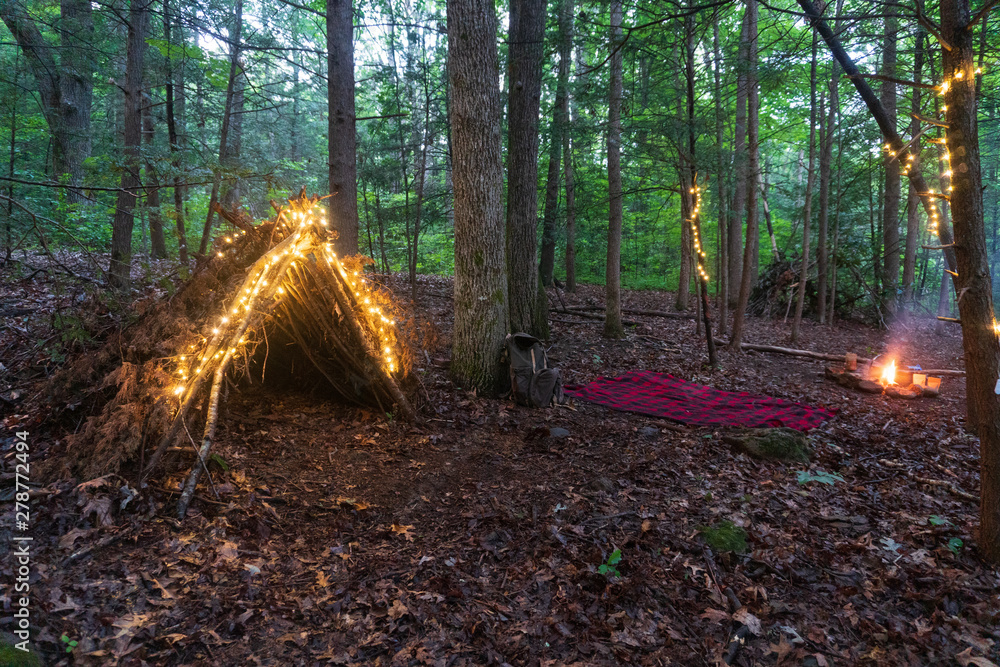

SurvivorCord® (Shelter Lines)
Strong as good paracord, but has fire tinder inside if things get dumb.
Shop with code GRITGEARHQThis isn’t a doom scroll. It’s a calm, useful walk through the things that keep people safe: mindset, shelter, fire, water, food, navigation, first aid, and a little campcraft. You can practice every skill in your backyard this weekend, preferably with coffee and someone you like talking to.
Survival starts in your head. Not with a titanium shovel that doubles as a satellite dish. The calm person who can slow their breathing, make a short list, and do the next smallest thing wins. That’s the whole game. I keep a simple loop for anything weird: Pause → Look → Decide → Do → Review. It keeps panic from stealing your intelligence.
Know the difference between comfort and need. You can be uncomfortable and perfectly safe. You can be comfy and in danger if you’re wandering toward a cliff in soft socks or unarmed hammock camping in bear country. The mindset piece is giving yourself a short plan and sticking to it. Write it down if your brain is scattered like mine.
You lose heat three ways outdoors: conduction (ground steals it), convection (wind steals it), radiation (space steals it). Your job is to block those thieves. A tarp, some cordage, and a ground pad will outperform fancy jackets when the sky gets rowdy.
Strong as good paracord, but has fire tinder inside if things get dumb.
Shop with code GRITGEARHQ.jpg)
Doubles as shelter ridge support and a rock-solid cook stand.
Lightweight, vacuum-sealed, and heat-reflective. Toss a stack in cars, kits, group trips, and emergency bins.
Stock cars, kits, and group outings. Windproof, waterproof, and reflects body heat.
 A debris shelter wins when you’re short on time and energy: keep the opening small, face it away from prevailing wind, and lay down a serious bed of insulation so the ground doesn’t siphon off your heat. Add a small, well-managed fire out front and you’ve got a warm, low-effort camp that disappears at first light. For maximum heat retention, line the inside walls and ceiling with a mylar emergency blanket so heat radiates back to you instead of vanishing into the night.
You don’t need to be a medic. You do need to know how to stop bleeding, open an airway, recognize heat/cold injuries, and improvise a splint good enough to walk on. My kit is boring on purpose: gloves, pressure bandage, gauze, tape, triangular bandage, meds (ibuprofen, antihistamine), a tourniquet I know how to use, and a few blister fixes.
Build layers so you’re never far from being fine. Here’s my stack: pockets → small waist pack → day pack → duffel in the truck. Each layer repeats the big three (fire, water, shelter) but gets fancier as it grows.
Cell service is a coin toss in big woods. A signal mirror weighs nothing and throws a bright “I’m here” farther than you’d expect. Whistles beat yelling. If you play in remote places, a PLB or satellite messenger turns epics back into stories you tell over biscuits.
Kids are great at survival practice if you make it a treasure hunt. Give them a job they can finish—a pile of thumb-thick sticks, a knot to master, or setting the table rock. Praise the result, not the chaos, and remember they’ll remember the hot chocolate more than your sermon on wind angles.
Most “emergencies” are boring: lights out, roads iced, water shut for a day, or you’re stuck waiting on a tow. A small bin next to the pantry turns those into “movie nights with lanterns.” Load it with headlamps, batteries, a crank radio, stove fuel, instant meals, and a deck of cards.
Affiliate note: some links support Grit Gear HQ at no extra cost to you. If the gear fails, I’ll say so loudly.
.jpg)